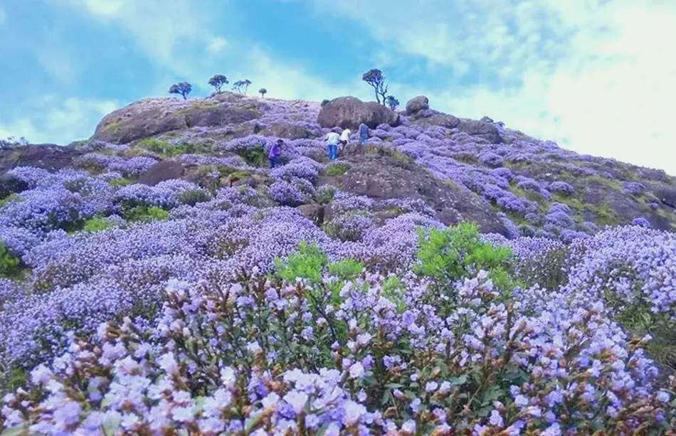
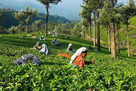
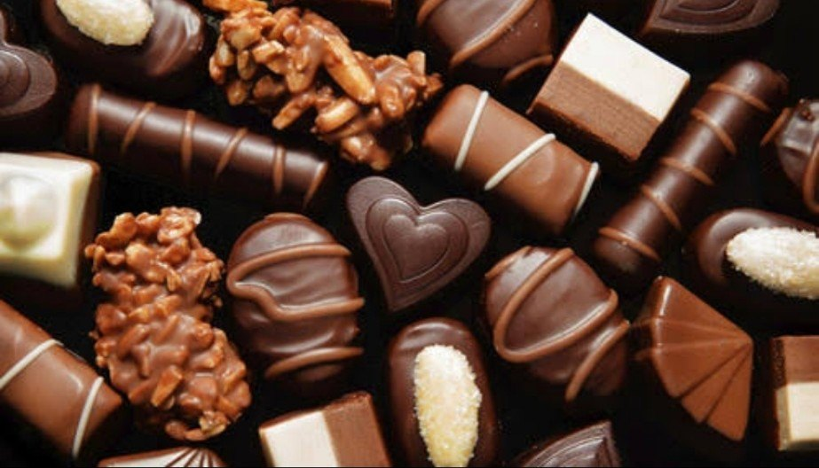
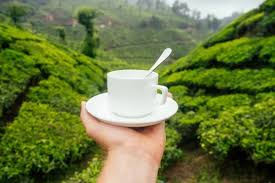

The Tea Paradise of Kerala

Home to the endangered Nilgiri Tahr and famous for its stunning Neelakurinji flowers that bloom once every 12 years.

Vast expanses of lush green tea plantations that create a mesmerizing landscape and offer perfect photo opportunities.
A scenic reservoir surrounded by rolling hills and tea plantations, perfect for boating and photography.
Explore the beautiful trails through tea plantations and forests.
Learn about tea processing at local tea factories.
Capture the stunning landscapes and wildlife.

Due to the abundance of cocoa beans, Munnar is a leading producer of handmade chocolate with a variety of White chocolate, dark chocolate, and nut-filled chocolate.

rich, malty taste and distinctive aroma, is a type of black tea produced in the tea gardens of Munnar, a hill station in Kerala, India. It's characterized by a golden yellow color and a fruity tinge after each sip.